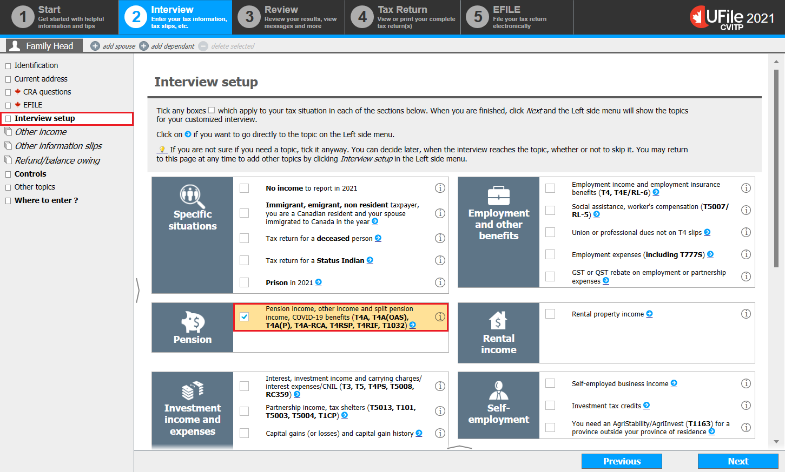
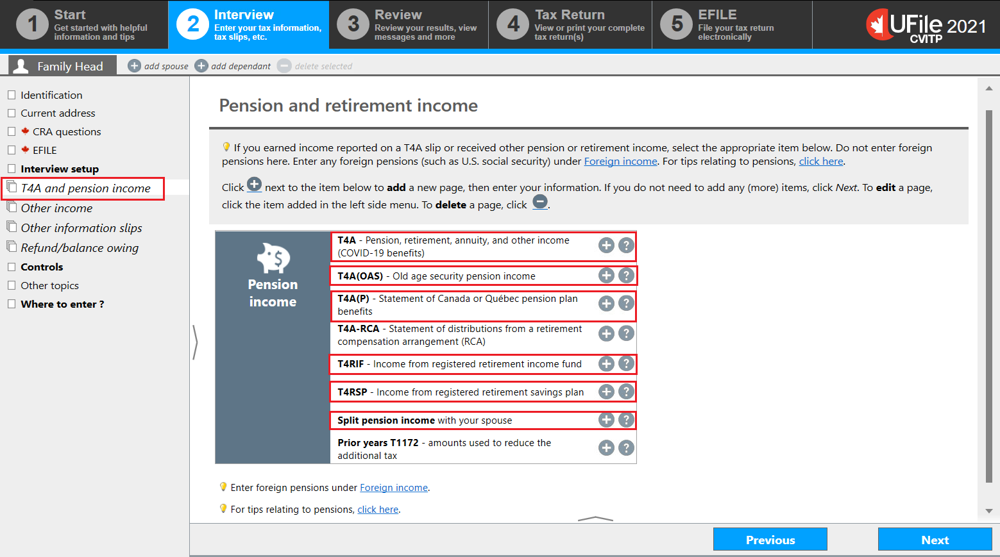
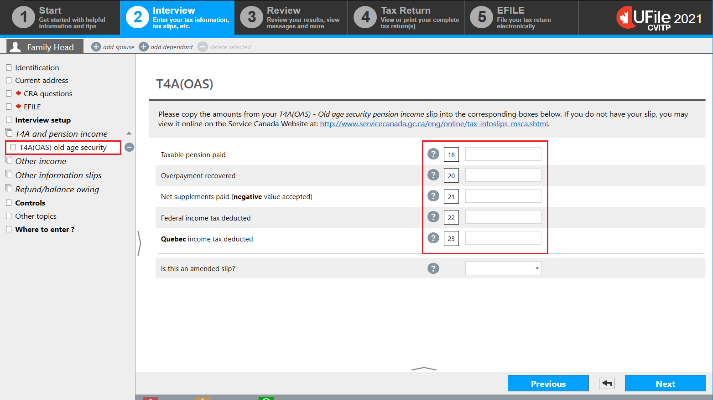
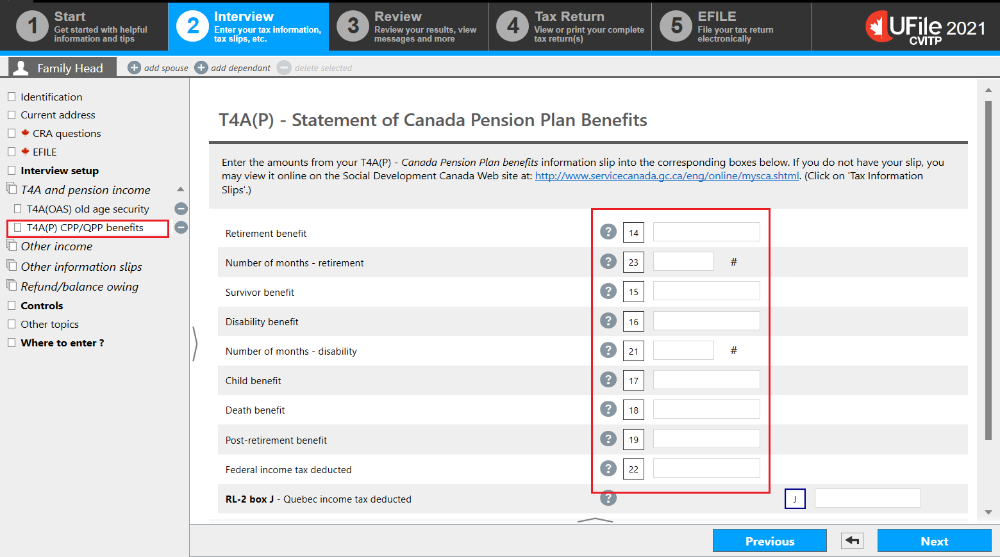
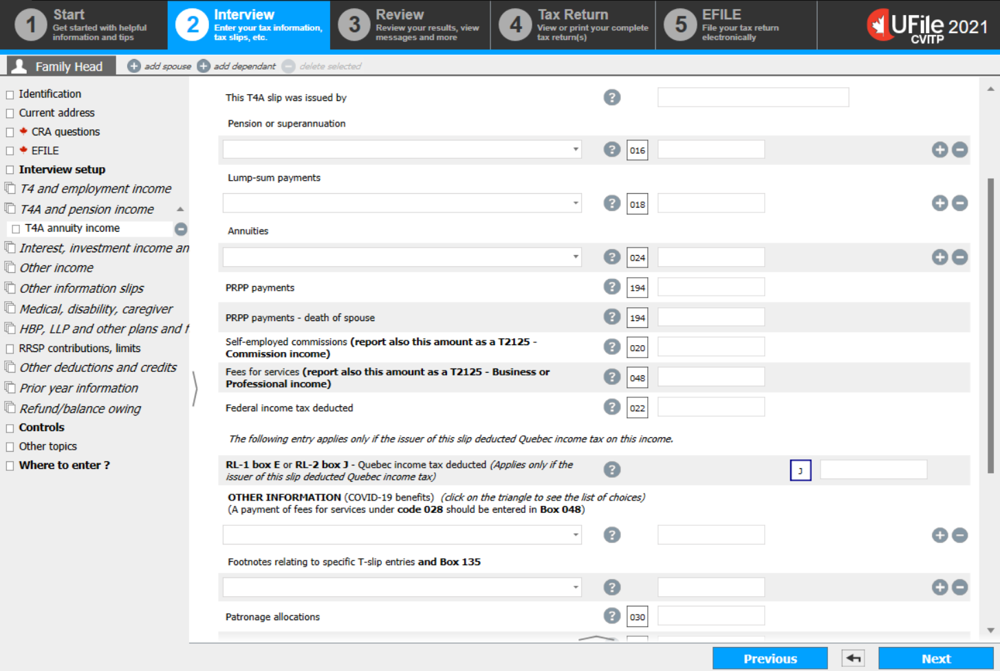
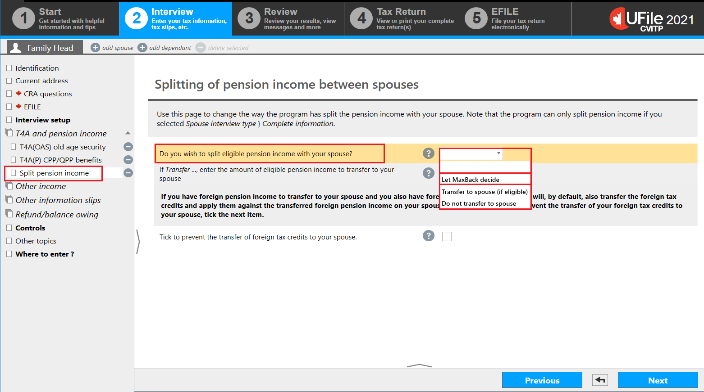

Interview setup
Text version of this screenshot
UFile screen
Under Interview tab
Family Head sub-tab
Interview setup topic is highlighted
Pension income, other income and split pension income, COVID-19 benefits (T4A, T4A(OAS), T4A(P), T4A-RCA, T4RSP, T4RIF, T1032) is highlighted
- click Interview setup in the left-side menu
Pension and retirement income
Text version of this screenshot
UFile screen
Under Interview tab
Family Head sub-tab
T4A and pension income topic is highlighted
Pension and retirement income page
T4A – Pension, retirement, annuity, and other income (COVID-19 benefits) is highlighted
T4A(OAS) – Old age security pension income is highlighted
T4A(P) – Statement of Canada or Quebec pension income is highlighted
T4RIF – Income from registered retirement income fund is highlighted
T4RSP – Income from registered retirement savings plan is highlighted
Split pension income with your spouse is highlighted
- click T4A and pension income in the left-side menu
T4A(OAS)
Text version of this screenshot
UFile screen
Under Interview tab
Family Head sub-tab
T4 (OAS) old age security topic is highlighted
T4A(OAS) page
Box 18: Taxable pension paid is highlighted
Box 20: Overpayment recovered is highlighted
Box 21: Net supplements paid is highlighted
Box 22: Federal income tax deducted is highlighted
Box 23: Quebec income tax deducted is highlighted
- enter the amounts from the individual’s T4A(OAS) slip into the matching fields
T4A(P) – Statement of Canada Pension Plan Benefits
Text version of this screenshot
UFile screen
Under Interview tab
Family Head sub-tab
T4A(P) CPP/QPP benefits topic is highlighted
T4A(P) – Statement of Canada Pension Plan Benefits page
Box 14: Retirement benefit is highlighted
Box 23: Number of months – retirement is highlighted
Box 15: Survivor benefits is highlighted
Box 16: Disability benefit is highlighted
Box 21: Number of months – disability is highlighted
Box 17: Child benefit is highlighted
Box 18: Death benefit is highlighted
Box 19: Post-retirement benefit is highlighted
Box 22: Federal income tax deducted is highlighted
- enter the amounts from the individual’s T4A(P) slip into the matching fields
Ufile tip
You are not required to enter the amount found in box 20 of the T4A (P) slip. The software automatically enters it for you.
T4A – Pension, retirement, annuity and other income
Text version of this screenshot
UFile screen
Under Interview tab
Family Head sub-tab
T4A annuity income topic
T4A – Pension, retirement, annuity and other income page
- enter the amounts from the individual’s T4A slip into the matching fields
- if the amounts from boxes 024 and 194 were received because the spouse is deceased:
- Enter the amount from box 024, in the appropriate field from the Annuities drop-down menu which includes the words – death of spouse
- Enter the amount from box 194 into the PRPP payments – death of spouse field
- fields 105, 131, 133, 196, 197, 198, 199, 200, 201, 202, 203, 204, 205, and 211 are found in the Other information (COVID-19) benefits drop-down menu
- fields 144 and 146 are found in the Footnotes relating to specific T-slip entries and Box 135 drop-down menu
- enter the amount the individual wishes to claim for 2022 into the box 201 field
Splitting of pension income between spouses
Text version of this screenshot
UFile screen
Under Interview tab
Family Head sub-tab
Split pension income topic is highlighted
Splitting of pension income between spouses page
Do you wish to split eligible pension income with your spouse is highlighted
Let MaxBack decide is highlighted in the drop-down menu
- select Let MaxBack decide from the Do you wish to split eligible pension income with your spouse? drop-down menu
Ufile tip
There is no need to do this step in the spouse or common-law partner’s tax return, the software automatically generates form T1032 for the individual and their spouse or common-law partner.
- print form T1032 for each spouse, because they need to sign each other’s copies and retain them for their records
T4RIF

Text version of this screenshot
UFile screen
Under Interview tab
Family Head sub-tab
T4RIF RRIF income topic is highlighted
T4RIF – RRIF income page
- enter the amounts from the individual’s T4RIF slip into the matching fields
- if the amount from box 016 was received because the spouse is deceased, enter the amount in the Taxable amounts from a RRIF upon death of a spouse field
T4RSP

Text version of this screenshot
UFile screen
Under Interview tab
Family Head sub-tab
T4RSP RRSP income topic is highlighted
T4RSP - RRSP income page
- enter the amounts from the individual’s T4RSP slip into the matching fields
- if the amount from box 016 was received because the spouse is deceased, enter the amount in the Annuity payments from RRSP - death of a spouse field